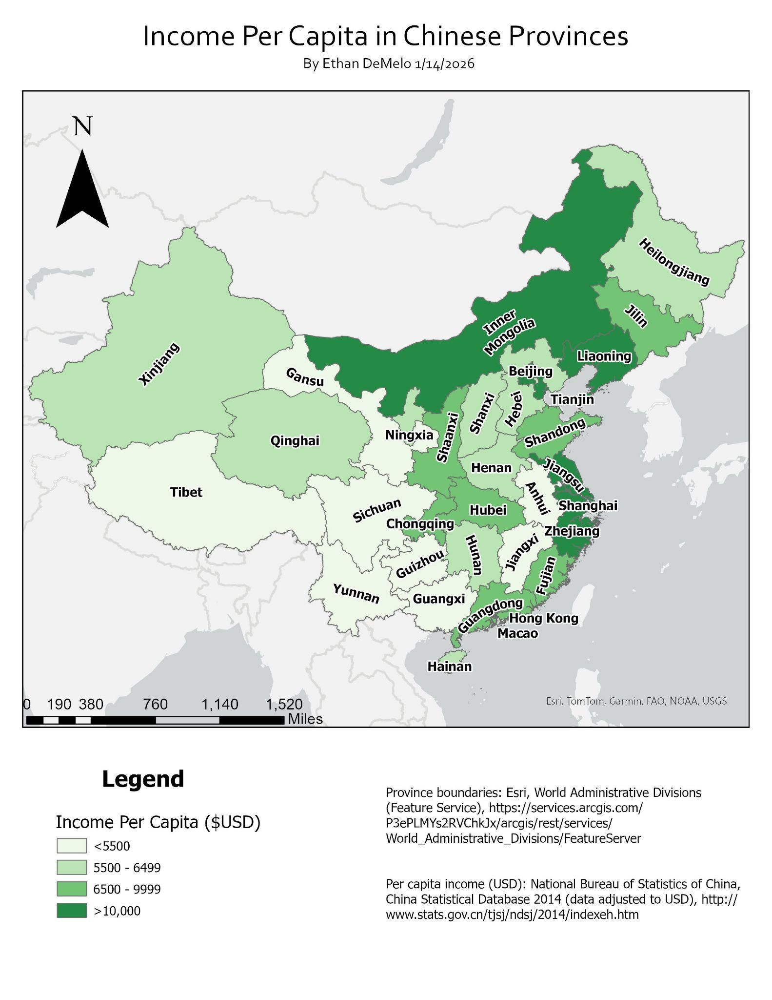
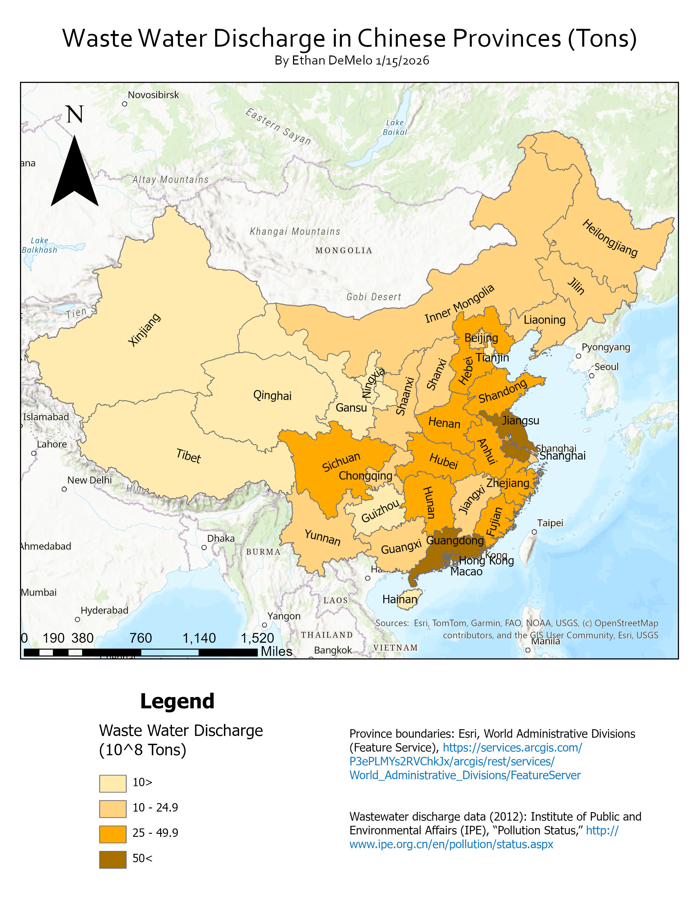
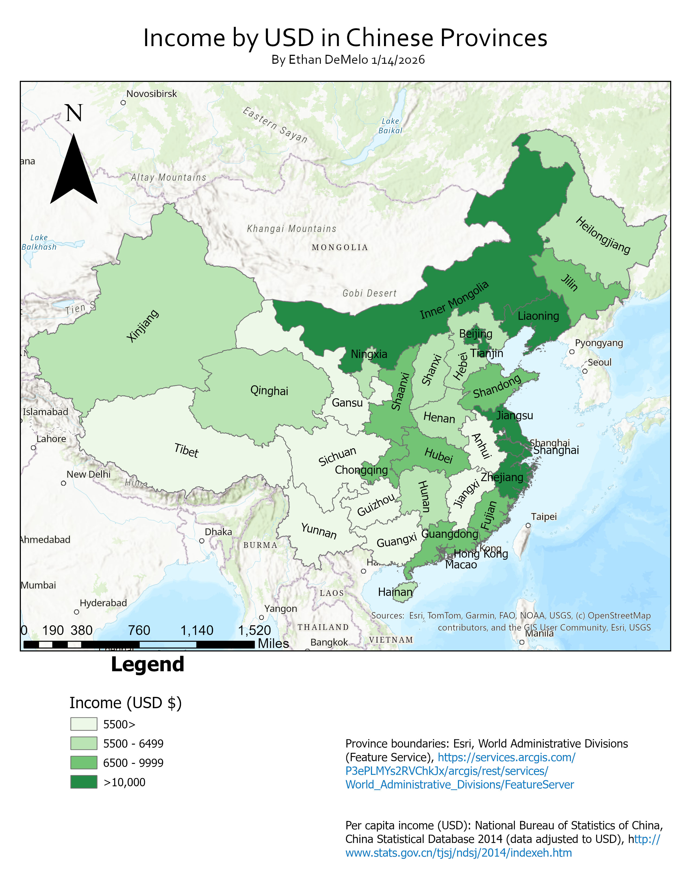
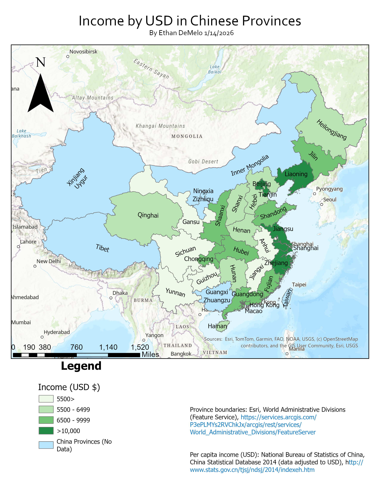

Tables and locations
Provincial income and wastewater values, boundaries and reported village/city matches.
GEOG 304 / Spring 2026 / Map series
I assembled a map series comparing provincial income and wastewater with reported village locations, while examining the limits of comparing different geographic scales.





Provincial income and wastewater values, boundaries and reported village/city matches.
Join provincial statistics, map reported locations and design complementary legends and layouts.
A unified series of final maps and earlier exports, with scale and reporting limits retained.
I produced provincial income and wastewater choropleths and a revised map showing reported “cancer village” locations against wastewater totals. The gallery keeps the two report figures and three earlier standalone map exports together, so their layout revisions can be inspected.
The wastewater map credits 2012 Institute of Public and Environmental Affairs data, while the income map credits the China Statistical Database 2014. These are different source periods, not a simultaneous measurement of exposure and health outcomes.
My coursework includes the maps, comparison write-up, province statistics and a corrected village-to-city matching table. I joined and symbolized the layers, organized the map layouts and discussed the geographic patterns. Source organizations and basemap credits remain on the original figures.
The maps show broad eastern/coastal concentration in several economic and wastewater categories and reported locations. They do not establish that provincial discharge caused illness at a specific village. Province-level totals, city-matched points and reported village events have different units, precision and coverage.
City matches are location context, not surveyed village coordinates. Uneven reporting, population, industrial composition, provincial size and differences in source years affect interpretation. The title’s quoted term identifies the reported source category rather than a clinical classification made by this project.
I would document match confidence and original place names, distinguish village coordinates from city proxies in the legend, and harmonize source periods. Wastewater normalized by population or industrial activity and watershed/county comparisons would answer different questions than province totals. Any health-exposure claim would require independent evidence.
Sources: my GEOG 304 report and map exports; Esri World Administrative Divisions, Esri China City Population, IPE wastewater data and National Bureau of Statistics of China as credited on the figures. Original map colors and legends are preserved.